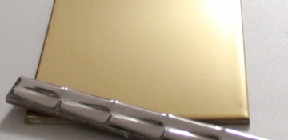
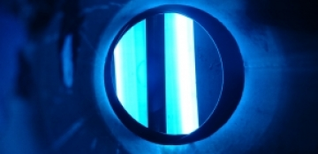
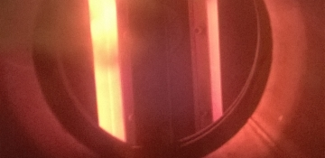
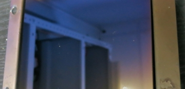
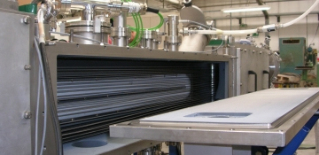
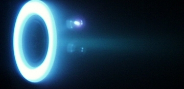

Home
/
Investment and scientific projects
Investment and scientific projects

Decorative coating deposition on ceramic tiles
Replacing galvanic processes with high-performance vacuum methods
Protective-decorative coating on thin sheet metal in roll-to-roll machines

RF extended ion source

Heated-target magnetron

Double-sided carbon coating on electrode foil using ion-plasma method

High-performance wire coating system

High-repeatability coatings for narrow-band optical filters